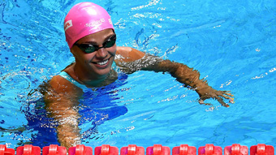

Женская сборная России с Ефимовой в составе впервые в истории выиграла серебро ЧМ в эстафете
Женская сборная России выиграла серебряные медали в эстафете 4×100 метров комплексом на чемпионате мира по водным видам спорта в Будапеште.
В составе команды выступали Анастасия Фесикова, Юлия Ефимова, Светлана Чимрова и Вероника Попова.
Отметим, что это самая ценная медаль в истории советского и российского плавания: ранее наши спортсменки выигрывали только бронзовые награды.
Победу по итогам заплыва оформила сборная США. Третьими стали пловчихи из Австралии.